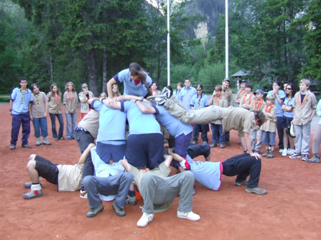

MOVIMIENTO SCOUT
Web de Paula Conde
INICIO
QUE ES
FUNDADOR
LEY Y PROMESA
ETAPAS
ACTIVIDADES
ENLACES
ACTIVIDADES

REUNIONES SEMANALESLas reuniones semanales son las indicadas anualmente en la Guía para Madres y Padres que se distribuye al inicio de cada curso scout. El Horario de las mismas son los sábados de 11.00 a 13.30 en las instalaciones del Colegio SAFA-Funcadia. Todas las niñas, niños y jóvenes tienen que asistir a las mismas con el Uniforme Scout. En todas las reuniones a las 13.20 se realizará la despedida de todas las unidades en el patio central del colegio. El punto de encuentro para dejar y recoger a las niñas y niños es junto a la Casita Scout. (Porche).
|
|
SALIDAS MENSUALESLas salidas mensuales serán las indicadas en la Guía que se distribuye al inicio de cada curso scout, y estarán establecidas en el calendario scout del grupo.
El Calendario Scout publicado al inicio de cada curso scout puede sufrir variaciones por ajuste de fechas o lugares.
|
|
CAMPAMENTOS DE VERANOLos organizamos anualmente desde hace más de 20 años. Los campamentos de verano scout son las actividades más importantes para las niñas, niños y jóvenes que durante todo el curso scout han estado participando de las actividades del grupo scout, y es el momento para poner en práctica todo lo aprendido durante el año, pero en un entorno natural donde pueden convivir y compartir más estrechamente con el resto de miembros del grupo, es decir, el campamento de verano les ofrece el mejor momento para aprender y disfrutar. |
|
Esta web es un trabajo de clase de TIC de Paula Conde Chaves
Blog de la Asignatura TIC: Pulsa aquí
Colegio Moliere (Huelva)